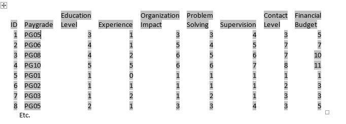
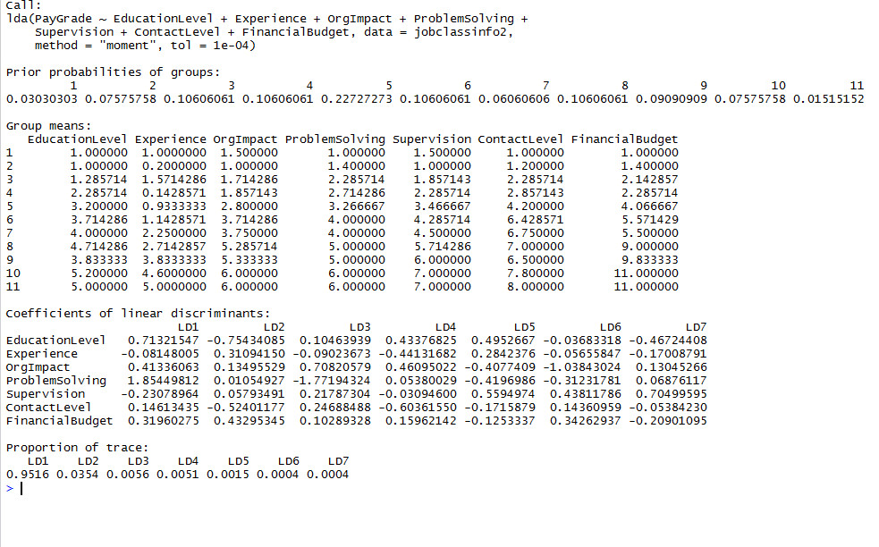
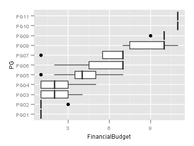
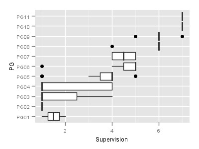
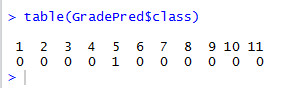
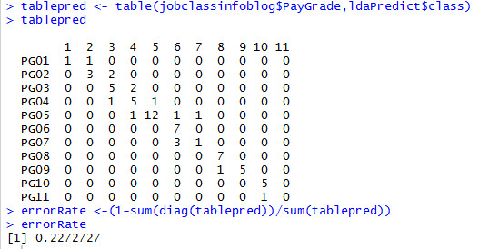

Introduction
As I have shared in recent previous blog articles, a lot of attention is being paid to ‘data driven’ HR currently. Along with that is the fact that the terminology and what constitutes the totality of ‘data driven’ HR is still hugely in flux as well.
In my last blog article:
https://www.linkedin.com/pulse/what-does-data-driven-hr-look-like-lyndon-sundmark-mba?trk=prof-post
I mentioned that ultimately the ‘totality’ from a content perspective could largely fall into 3 major categories- based on the ‘why’ we capture HR metrics and measures:
We capture metrics to help us understand what is going on with our human resources- human resource activity related metrics
We capture metrics that help us understand how well our HR business processes themselves are performing- metrics related to process measurement and quality improvement
We capture metrics to help fundamentally change the HR methodologies themselves-making the how we do the various HR functions more robust by applying data driven statistical methods to them.
This article is intended to illustrate an example of the last bullet point above. How can we make the HR functions more robust by infusing deeper measures and applying statistical analysis to make improved HR decisions?
In this blog, I will illustrate how this can be done with an example of one method of job classification. The particular method illustrated will be an approach that is typically done in a non-quantitative way. (I am well aware that there are ‘point methods’ etc. for job evaluation that attempt to quantify information through assigning of points and the summing of them)
I will start out by describing one ‘traditional’ non-statistical way this illustrated method is often done.
Then I show how that can be transformed into measures/metrics.
Finally I will show an example of a statistical procedure that can be used to support this HR function- and actually apply it to the measures created- to show how ‘data driven’ statistics can help support or improve the job classification process.
I should also mention that I have no intent or purpose in this blog article to get into a wider discussion of job classification methods that are out there, many of which have successfully been around for years- quantitative or non-quantitative. My only purpose here is to illustrate the application of statistical methods to an example HR function- especially a traditional non quantitative method. I simply want to show that non quantitative information can often be quantified in some way, and that statistical procedures can be applied, models can be built, and the function can be more data driven as a result.
For those to whom the application of statistical methods to a business problem is new or unfamiliar, this activity does not require manual mathematical/statistical calculations. Computerized statistical software packages do that for you. Your work is not in the calculations. Having said that, your work is to generate and prepare the data, understand the appropriate statistical tests to run, and how to interpret the output.
The statistical method I will show is also just one example. As you will see later in this article, predictive ‘classification’ or ‘categorization’ is a huge area of applied statistics. There are many methods possible. In a real life situation, you might want to apply many different statistical methods to see how they vary in their predictive accuracy. Because I would like to keep the blog article at a reasonable length, I will just show one example and touch the surface of what is possible here.
What Does This Method of Job Classification Look Like From a Non-Statistical Perspective?
There are a variety of methods have been in use over the years for job classification and evaluation. One is the use of written job descriptions being evaluated against written job class specifications.
This approach, generally, has the following characteristics:
Job descriptions are written for every job in the organization. These are narrative.
Job Class specifications are also written and are narrative as well. These are more general that job descriptions. Their intention is to encapsulate information in more general or summary terms to reflect both job families and pay grade related information.
While both are narrative, the content of both is intended to be structured. Certain types of information are required to exist in both. In addition to being descriptive about what work is done, they will typically include structured information on other features of the job.
The ‘other’ features captured in both the job specifications and the job descriptions might include such things as:
Contact level
Financial Responsibility
Supervision Exercised
Supervision Received
Accountability
etc.
Each of those features will likely have descriptions that represent ‘more of’ and ‘less of’ that feature in the various job specifications and descriptions. For example we would expect financial responsibility to increase the higher the pay grade is in most organizations. The point is that these features will vary in their described amount or level in each job description and specification. Features will either be positive or negatively related to the paygrades- more of the feature or less of the feature as you go up and down paygrades.
The ‘features’ will exist in all job descriptions and job specifications in terms of being described- even if the description is that the feature is not present in that work.
When new job descriptions come in for job ‘classification’, the contents of the descriptions is compared to the job specifications for ‘best fit’. In other words, what job specification does it most closely resemble based on these features.
When the analysis is complete, that job description is assigned to a job class code which reflects which job specification it has been assigned to - based on content similarity of these features.
The job description is then assigned to that paygrade.
In this traditional approach, the process is non quantitative, and is clearly dependent on the skills of the job analyst. Also in many cases, job descriptions might have features described that don’t clearly fit into one job class specification- but rather might straddle more than one.
Even with this traditional approach not being data driven statistically, you would probably agree with the following:
Once job specifications are written- they represent a ‘known’ population- a finite list that is intended to represent the entirety of the type of work and pay grades assigned.
Once job descriptions themselves are assigned to the job specifications, they too become a ‘known’ population based on paygrade, because once the job class specification has been assigned to it, it along with the class specs themselves represent a known list that has been assigned a paygrade. Each paygrade represents a ‘group’- those job class specs and job descriptions that have been assigned to it.
Any unclassified job description would be deemed to not be part of that ‘known’ population yet until the job analysis and classification has been done.
The whole point of job classification in this method, is to assign a new job description that doesn’t yet exist in the ‘classified’ job descriptions into that population by figuring out which is the best fit group ( paygrade) in this case- based on how its features are similar of different to the groups of job descriptions already classified.
So far so good? Without overstating the obvious, job classification is about ‘classification’ – classification into ‘known’ groups.
Why is this important to state? Because the idea of classifying items into groups, is not restricted to HR and job classification. Our ability to understand our world and how it works is absolutely dependent on recognizing patterns and being able to group like with like, like from different etc. It should come as NO surprise then, that in statistical analysis there are statistical procedures that are designed to do ‘classification’- to take a set of items and group like with like, different from like etc. These statistical procedures have been used for years in many vocational fields. So why shouldn’t we use these in HR to help make our decision making with respect to HR decisions more robust- more data driven?
There are many classification methods possible in statistics, but I will illustrate only one as an example- Discriminant Analysis- to illustrate the point that job classification can be ‘data driven’.
What Is Discriminant Analysis?
From Wikipedia
http://en.wikipedia.org/wiki/Linear_discriminant_analysis
Linear discriminant analysis (LDA) is a generalization of Fisher’s linear discriminant are methods used in statistics, pattern recognition and machine learning to find a linear combination of features which characterizes or separates two or more classes of objects or events.
Ok- how can we put this is a job classification vernacular? Linear discriminant analysis (when applied to job classification) is a method used to find a linear combination of job description ‘features’ which characterizes or separates two or more paygrades.
What does Linear Discriminant Analysis (LDA) require?
There needs to be a population of something. (In our case it’s the full list of job specs – and eventually job descriptions too)
That population must be categorized into known groups. (in our case paygrades)
Each member of the population must be characterized by a set of measured features. (In our case it could be contact level, financial responsibility, supervision received etc.)
In addition to these, there may be other data requirements for ‘interpretability’ of the statistical results -i.e. normality of data. (The coverage of these is beyond my intent in this article)
Given the ‘known groups’ that the population is assigned to, and the level of those features in each member of the population, LDA will figure out mathematically the combination of those features that best categorize each group –ultimately through formulas. Those formulas can then be used to figure out mathematically the best fit group would be- when applied to items not yet in the population. (In our case- what combination of the levels of features of contact level, financial responsibility, and supervision received, etc. can best predict the closest fit paygrade).
What does LDA do?
Given the ‘known groups’ that the population is assigned to, and the level of those features in each member of the population, LDA will figure out mathematically the combination of those features that best categorize each group –ultimately through formulas. Those formulas can then be used to figure out mathematically the best fit group would be- when applied to items not yet in the population. (In our case- what combination of the levels of features of contact level, financial responsibility, and supervision received, etc. can best predict the closest fit paygrade).
How Do We Apply Discriminant Analysis to Job Classification information?
There are essentially 3 steps:
Quantify and categorize the required information
Run the LDA statistical procedure
Interpret the results
Quantify and Categorize the Information
In this step we are going to use an Excel Spreadsheet (CSV- comma separated value file) to capture the information that is necessary. We will need to translate the information contained in the job specifications into categories and measures. In the example illustrated below- the categorical information is the Paygrade, the quantitative information are the features we decide to measure.
Let us look at some hypothetical data:
We have 66 job specifications covering 11 paygrades.
Each of the 66 job specification narratives include detailed information about the nature of that work. They also include descriptions related to various features that all the job specifications have in common. For purposes of our example, these ‘features’ include:
Minimum education level required
Minimum years of experience required
Level of organizational impact
Degree of problem solving
Level of supervision exercised
Highest contact Level
Level of Financial Budget Responsibilities
Each of those features is mentioned in every job specification but is a narrative description.
We need to go through all of these job class specifications and develop a scale for each of these features. The scale would on the one hand have a value of 0 if that job specification contains none of that feature. As an example, a basic clerk might have no financial budget responsibility. The idea is to summarize all statements describing that feature and at least order them at an ‘ordinal’ level- in other words identify the order of lowest to highest on a scale for that feature. A highest level for Financial/Budget responsibility might be total financial budgetary responsibility across an enterprise and be assigned a value of 5. A 1 might be responsibility for a particular organizational program. A 2 might be at a level of a department etc. The idea is that the level that these features exist at will vary from job specification and pay grade. So to quantify these features, we need to know the range of levels these features can exist at. Once we know these, we can then take each job specification and rate its features levels one at a time.
In the example above, it means for each job classification specification we have, we would have one row in our spreadsheet and the columns would represent that which we are trying to eventually predict and the values of each of those ‘features’ for that particular job specification.
In a spreadsheet it would look something like this:

And in my hypothetical example there would be 66 rows.
The id column in this example is simply an integer- but it would relate to a job class specification id in the real world as a label in your data.
The Paygrade is what you will eventually want to predict based on the features of Education Level, Experience, Organizational Impact, Problem Solving, Supervision, Contact Level and Financial budget.
Every feature would have a value for each job specification, even if the value is 0
Each feature would have a range of valid values specific to it. The values can only be in that range.
At this point you have taken what is essentially narrative information and converted it to quantitative data in a meaningful way.
Run the LDA Statistical Procedure
For this next step you actually perform that statistic analysis. A wide variety of software tools exist for this purpose. Some of the more well-known ones are SPSS, SAS and R. SPSS and SAS are proprietary, R is free.
I will use R to perform the statistical analysis. (Please note – for this blog article please do not worry if you don’t completely understand the R coding or commands below. My intention here is to illustrate a process. There are other statistical packages out there where the analysis is done by a more point and click type of method. In any approach used though you do need to understand what is being predicted and what are the predictors being used for it).
Please also note that even within the R statistical package, there are multiple different libraries and functions all capable of producing discriminant analysis output. You have choices.
Finally, it’s important to understand that many statistical procedures not only have the intent of being used for predictive purposes- but in getting to the prediction -provide you with a lot of descriptive information as well to understand better the dataset you are using.
Here is an actual set of R commands that will perform this discriminant analysis:
library(MASS)
ldaModel <- lda(PayGrade~EducationLevel+Experience+OrgImpact+ProblemSolving+Supervision+ContactLevel+FinancialBudget, data=jobclassinfo2, method=“moment”, tol=0.0001)
The above statement essential says:
Go find the library in R called MASS
Create a storage object called ldamodel.
Run a LDA procedure –linear discriminant analysis found in the MASS library, with Paygrade being what we are trying to predict, and Education level through to Financial Budget as being the ‘features’ upon which the prediction will be based on. Get the raw data from a file called jobclassinfo2
Store the results into ldaModel
This code above is what actually does the process of figuring out what the discriminant equations are. In addition, it generates and provides a wealth of other useful information.
Review and Interpret the Results
Here is some sample output:

Remember earlier I had mentioned that Linear Discriminant Analysis has both a descriptive part and a predictive part? What you see above is the default descriptive part. We will just briefly look at this first.
The above is provided so that one sees intermediate results eventually used to do the prediction.
The first summary shows the prior probabilities of the groups. That is, given that there were 66 job specs and 11 pay grade groups- what proportion are in each group before the discriminant calculations occur.
The second summary shows you group means (averages) for each of the 11 pay groups- what the average value of each of the 7 features was for each group. This doesn’t necessarily look as cool in the form of a table, but adding graphics to it-gives a good visual as to how the groups are different. For example you can do a box plots on a couple of the features to get an idea of how they differ by group.


You could do this for each of the ‘features’ to see how they vary by paygrade.
The third summary shows the coefficients of linear discriminants. These are necessary for R to eventually predict the category.
The final summary is the Proportion of Trace. What this summary shows is what proportion of the entire variance of the data is accounted for by each discriminant equation. In this example between LD1 and LD2- the first two discriminant equations- 95.16 + 3.54 % (98.6) of the variance in our data is accounted for.
It’s not my intent in this article, to discuss the above output much further. Suffice it to say, the descriptive part of this has the purpose of giving us a deep picture and understanding of our data itself. The descriptive output above is still just a sampling of some of the descriptive output provided. One could write a blog article alone just on illustrating all that can be provided, what it means, and why it’s provided.
By running the following additional commands in the R statistic package we can get a prediction. This code grabs the features values for a single new position description not yet classified in JobClassInfo2testdata.txt and tells it to predict best fit pay group based on our ldaModel and store the results into GradePred.
The data case in JobClassInfo2testdata.txt is as follows:
Dataset <- read.table(“C:/Users/Lyndon.A3HR/Documents/JobClassInfo2testdata.txt”,
header=TRUE, sep=“\t”, na.strings=“NA”, dec=“.”, strip.white=TRUE)
save(“Dataset”, file=“C:/Users/Lyndon.A3HR/Documents/jcinfo2.RData”)
GradePred <- predict(ldaModel,Dataset)
table(GradePred$class)
In effect, we are saying to R- here are the values of the features from a job description for which we do not know what the best fit paygrade is. You tell us based on the model you created from our known population of job class specifications.
This results in the following output:
table(GradePred$class)

This shows a 1 under the value 5 and 0’s everywhere else. It means that paygroup 5 is the predicted best fit paygroup based on the features of this new job description as compared to the features of the population of all 11 pay groups.
While we showed the example of taking one new job description above and classifying it into best fit paygrade, doing that at this point would be premature in a real life situation. We did it at this point to illustrate that prediction CAN be done- based on the results of the discriminant analysis.
In real life we would want to do much more work on this ‘model’ before putting it into extensive use. This ‘work’ would be ‘validation’ and perhaps tweaking of the model. We want to know
How well is the model predicting?
How accurate is our prediction?
Can we make our prediction even more accurate?
Validation
One way to validate our model, is to take the original data and paygrades that we already know for the 66 job class specifications and use the data we have on their feature values to predict what pay grades would be predicted for the population we already know. In other words, given our model, how often would it predict the actual values of paygrade that we already know for each of the 66 job class specs that we have?
Let’s do that and see:
Here are the R commands used and the output:
ldaPredict <- predict(ldaModel, jobclassinfo2 )
tablepred <- table(jobclassinfo2$PG,ldaPredict$class)

The interpretation of the above is as follows:
The line PG01 represents some of the actual original values for the job class specifications in our data. Two of the specs had pay grades of PG01 (1+1 above). When predicted based on the features of the paygrades- one was predicted to be at pay grade 1 and the other at paygrade 2.
IF the model predicted the paygrades perfectly- only the main diagonal from top left to bottom right would have non 0 counts in them. If anything falls off that main diagonal in terms of comparing the actual value to the predicted, it is deemed to be an ‘error’- because it didn’t predict its original value.
So the error rate is what percentage of the predictions turned out not to be correct based on the original values. Above there was a 22% error rate which means a 78% accuracy rate.
So you might say- ok – is that good or not? Well, you need to remember that if you had none of this and you had neither discriminant analysis or prior knowledge of what proportion were in each pay grade based on what we already knew about the real population of 66 job class specifications, you would have 1 chance in 11 (9%) of getting it correct by chance, and 10 chances out of 11 to get it wrong (91% error rate) by guessing- because there are 11 possible groups. So upping that accuracy rate from 9% to 78% I would say is pretty good.
Does that get your attention?
Some Caveats
n the above example we used the original data to predict itself. Statistically speaking the error rates we get when we do that are actually overly optimistic. We call this the ’training data’ error rate. A more accurate error rate is achieved when you predict a completely different set of ‘known’ data but based on the discriminant model derived from the original known dataset that you had. The error rate on this is known as testing data error rate and will often be higher and the accuracy rate lower. There are whole books written on the subject of validating statistical models for prediction and classification. There is no intent in the purpose of this blog article to dive further into that.
What Else Does This Analysis Tell Us About Our Current Job Class Specifications?
Sometimes it can be useful to step momentarily outside of our statistical analysis and come back to what it might be telling us in our non-statistical world.
You will notice that in the summary grid showing actual versus the predicted that for the most part the predictions that were wrong were not far off. If the predicted was not the actual, often the predicted was one paygrade higher or lower- not huge in terms of being interpreted as an anomaly.
Since traditional job classification in this method is still subjective based on comparing a written job description to a written job class spec, even our known paygrades assessed manually might not be completely correct. The model may be telling us that if we apply a mathematical rigor to our decisions that the ‘real’ categorization might be different than it currently is. Maybe…
Or the differences in predicted versus actual might be in our interpretation of what the ‘feature’ values were for that job class spec after essentially trying to categorize some that is a narrative description into a numeric value. We may need to revisit this too to see if our original ‘measurement’ was in error. Maybe …
Sometimes if you use too many feature measurements to predict a category or group, this can sometimes add prediction error. There are statistical approaches to discriminant analysis known as ‘stepwise’ discriminant analysis that attempt to figure out whether ‘less is more’- that possibly using fewer features as predictors might increase the predictive accuracy. Maybe …
You hopefully get the point here. This is a form of ‘data science’ being applied to HR- raising questions of the data, doing the analysis, interpreting the results, asking new questions, doing the analysis, interpreting the results etc. The point is - how can we apply data driven methods to better understand the world around us and make what we do better? We interact and integrate the world of ‘data driven’ with the world of ‘HR’ that we know.
Discriminant analysis is one of MANY statistical methods that can be used for ‘categorizing or classification’. Another is decision trees- an approach I may show in an upcoming blog article.
Conclusion
The primary point of this article was to provide a practical example of how we can take a specific methodology from HR- job classification and understand what this might look like if we put it into the world of ‘data driven’. It is trying to help HR practitioners understand that there indeed is this ‘whole other world’ of HR that is far more technical and quantitative than traditional HR methodologies and practice. This whole other world exists because ‘data driven’ can be applied to HR. The statistical tools used in being data driven are not unique to HR. For example banks might use linear discriminant analysis to predict who might be a bad loan risk. The statistical tools can be applied to supply chain, marketing and other areas and often already have been. HR is no different.
As a final aside- while I mentioned SPSS, SAS , and R as some of the statistical packages out there that can be used- there are also many others- some commercial, some free. There are also increasingly really good data mining packages that hide much of the statistical complexity from the end user, but allow just enough to allow enough exposure so that thoughtful continued analysis and research can occur. In all of these options it is important to understand that the application of statistics to any endeavor these days is not about the analyst sitting down and hand calculating them. Software packages do that for you. What users do need to do though is learn and understand what statistical procedures answer what types of questions, apply those, and then understand how to correctly interpret the results. This is true whether you are using traditional statistical analysis packages or data mining software.
To HR practitioners the key question becomes ‘Is HR as a profession interested in becoming ’data driven’ and pick up the needed statistical and data analysis skills’?